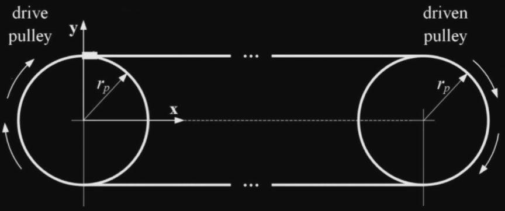
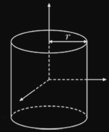
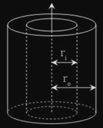

In order for a motor to accelerate or decelerate a load, it must overcome the load's inertia, or resistance to change in motion, as explained in Newton's First Law.

In belt-driven linear motion systems, the motor has to overcome not only the inertia of the applied load, but also the inertia of the belt, pulleys, and motor coupling. It is common for belt driven systems to use a gearbox to increase torque, reduce speed, and reduce the inertia of the load reflected to the motor.
The inertia of each component can typically be estimated with sufficient accuracy by using the standard inertia equations for simple shapes. Inertia depends upon the axis around which a component rotates.
Belt & applied load
Considering the applied load and the belt together, since they both rotate around the axis of the driven pulley; they can be modeled as a point mass that rotates around the driven pulley.
$$
J_l = mr^2
$$
$$\begin{array}{cclc}
J_l &:& \text{Inertia of belt and applied load} & [kgm^2] \\
m &:& \text{Mass of belt and applied load} & [kg] \\
r &:& \text{Radius of driven pulley} & [m]
\end{array}$$
Mass
Belt manufacturers typically provide mass (or weight) information per unit length. The mass of the belt is the mass per unit length multiplied by the total length of the belt. The full, circular belt length needs to be used, not just the length of the stroke.
The applied load is typically mounted to the belt via a carriage or table; the mass of the coupling should be included in the mass of the applied load.
Pulleys & coupling
The pulleys and their coupling can be treating as solid cylinders that rotate about their own axes.
$$
J_p = \frac{1}{2} mr^2
$$
$$\begin{array}{cclc}
J_p &:& \text{Inertia of solid cylinder (pulley, coupling)} & [kgm^2] \\
m &:& \text{Mass of cylinder} & [kg] \\
r &:& \text{Radius of cylinder} & [m]
\end{array}$$

Mass
Although the pulleys may have the same radii, if one pulley is toothed (driven) and the other is smooth (idler), as is the case in many belt driven actuators, they will have different masses and, therefore, different inertias.
Hollow cylinder approximation
Although the solid cylinder approximation is typically sufficient, more accurate inertia values for the pulleys and coupling can be found by taking into account that these components have a center bore and using the inertia equation for a hollow cylinder.
$$
J_{ph} = \frac{1}{2} m(r_o^2 + r_i^2)
$$
$$\begin{array}{cclc}
J_p &:& \text{Inertia of hollow cylinder (pulley, coupling)} & [kgm^2] \\
m &:& \text{Mass of cylinder} & [kg] \\
r_o &:& \text{Outer radius of cylinder} & [m] \\
r_i &:& \text{Inner radius of cylinder} & [m]
\end{array}$$

Total inertia
The total inertia of the moved mass (applied load, belt, pulleys, and coupling) is divided by the square of the gear reduction, and the inertia of the gearbox is added. This will give the total inertia reflected back to the motor, which can be used for motor sizing and selection.
$$
J = \frac{J_l + J_{p1} + J_{p2} + J_c}{\epsilon^2} + J_g
$$
$$\begin{array}{cclc}
J &:& \text{Total inertia reflected back to the motor} & [kgm^2] \\
J_{p1}, J_{p2} &:& \text{Inertia of first & second pulleys} & [kgm^2] \\
J_c &:& \text{Inertia of coupling} & [kgm^2] \\
J_g &:& \text{Inertia of gearbox} & [kgm^2] \\
\epsilon &:& \text{Gear reduction}
\end{array}$$